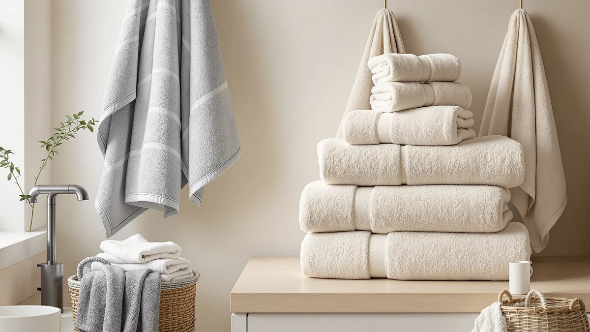

Quick Answer
The best bath towel sets depend on who is using them: couples want a matching stack, families need kids' sizes, and some buyers want one great towel instead of a whole set. We compared material, piece count, and price against verified owner reviews, and the Peryiter 6 Pcs set came out ahead for buyers who want a complete matching set without shopping piece by piece.
Our pick: Peryiter 6 Pcs Mr and — $42.99 Check Price on Amazon
Bottom line: our top pick is the Peryiter 6 Pcs Mr and Mrs Themed Towel Set Honeymoon Gifts at $42.99. The best budget option is the ZICOTO Soft Hooded Beach Towel for Kids - Cute Towel for at $13.99.
Things to Know Before You Buy
- Material matters most: 100% cotton stays absorbent wash after wash, while cotton blends resist wrinkling but often feel thinner over time.
- Set size varies widely: some sets bundle 6 to 8 pieces of bath towels, hand towels, and washcloths, while others are a single oversized towel.
- Kids need their own sizing: hooded towels built for toddlers or for ages 3 to 6 fit nothing like a standard adult bath towel.
- Price does not always track quality: this list includes solid cotton sets under $20 and a premium single towel near $40.
- Check the intended use: pool and beach towels prioritize quick handling and portability, while everyday bath towels prioritize plush absorbency.
The best bath towel sets are not all the same style of purchase. Some buyers want a full stack of matching bath towels, hand towels, and washcloths for a family bathroom. Others need one oversized towel to replace something that has gone thin after a few years on the rack. We looked at options across both categories, along with a few towels built for kids and pool days, since bath towel shopping rarely stops at the tub.
We compared seven picks on material, size, and price, and cross-checked them against verified owner reviews rather than marketing copy. Cotton blends showed up more often in the value tier, while single-item towels leaned on 100% cotton or Supima cotton for a plusher feel. Our top pick, the Peryiter 6 Pcs set, works well because it gives couples a complete matching set at $42.99 without asking them to buy pieces separately.
The rest of our list spans a $17.99 eight-piece set from HOMEXCEL, hooded towels for kids at two different age ranges, a Paw Patrol towel built for pool days, a Supima cotton towel from Lacoste, and a hooded bathrobe that pairs well with any of the sets above. None of these are flawless, and we call out the tradeoffs for each one below.
Why You Should Trust Us
Ilane Tall is Best Bath Towels' home and bath expert, covering bath towel sets and other bathroom textiles for this site. For this guide, she compared materials, sizes, and prices across current Amazon listings and read through verified buyer reviews for each product. We do not run a fake testing lab, and we do not claim to have washed or dried these towels ourselves. What we can offer is a careful read of the specs manufacturers publish and the patterns that show up again and again in real owner feedback.
How We Picked
We started by pulling the current lineup of bath towel sets and individual towels sold in this category, then narrowed the list using a few consistent filters. We prioritized listings with a specific piece count or towel size stated up front, since vague sets are hard to compare fairly. We also weighted material claims, favoring 100% cotton and Supima cotton over unspecified blends when the price gap was small. Finally, we cross-referenced pricing against verified reviews to filter out sets with a pattern of complaints about thin fabric or shrinkage.
How We Compared
Bath towel sets live and die on a few measurable traits: material, piece count, and how buyers say they hold up after repeated washes. We compared published specs across all seven picks, including the Peryiter set's 100% cotton construction, the cotton blend used in the HOMEXCEL eight-piece set, and the PJGGZ bathrobe. Where a listing included a rating or review count, we weighed that alongside price per piece rather than price alone. Reviewers consistently note when towels shrink, pill, or lose absorbency after a handful of washes, so we treated recurring complaints in that vein as a bigger red flag than the occasional one-star outlier.
Our Picks

Peryiter 6 Pcs Mr and
What we like
- 100% cotton construction across all six pieces
- Matching his-and-hers design keeps towels paired by owner
- Covers bath towels, hand towels, and washcloths in one purchase
Flaws but not dealbreakers
- At $42.99, it costs more per piece than several sets on this list
- The listing does not specify individual towel dimensions
| Material | 100% cotton |
| Size | — |
The Peryiter 6 Pcs set is our pick because it solves a specific problem: buying a full towel wardrobe for two people without ending up with mismatched pieces. The 100% cotton construction matches the material buyers say they trust most for everyday absorbency, and the six-piece count covers bath towels, hand towels, and washcloths in a single order instead of three separate purchases.
At $42.99, it sits in the middle of our price range rather than at the bottom, and the listing does not break out individual towel dimensions the way some competitors do. Owners report that the his-and-hers labeling makes it easy to keep towels sorted in a shared bathroom, which is the main reason this set stands out from generic six-packs at a similar price.

HOMEXCEL 8PK Bath Towel Set
What we like
- Eight pieces bring the per-towel cost well under most single bath towels
- Cotton blend construction resists wrinkling between washes
- Large piece count suits bigger households or guest bathrooms
Flaws but not dealbreakers
- Cotton blend towels tend to feel less plush than 100% cotton over time
- The listing does not specify a piece breakdown by towel type
| Material | Cotton blend |
| Size | — |
The HOMEXCEL 8PK set is our runner-up because it delivers the most towels per dollar on this list at $17.99 for eight pieces. That works out to roughly $2.25 per towel, which makes it a practical choice for households that burn through towels fast or need extras for guests.
The tradeoff is material. Cotton blend towels generally resist wrinkling better than 100% cotton but tend to feel thinner and less absorbent after repeated washing, a complaint that surfaces often in reviews of blended sets at this price. If plush texture matters more to you than piece count, our top pick or the Lacoste towel further down this list are better matches.

ZICOTO Soft Hooded Beach Towel
What we like
- 100% cotton construction for everyday softness
- Hooded design keeps the towel in place on active kids
- Sized specifically for the 3 to 6 age range instead of a generic kids fit
Flaws but not dealbreakers
- Only fits the stated age and size range, not older kids or adults
- At $13.99, it is priced closer to a specialty item than a basic towel
| Material | 100% cotton |
| Size | Medium (3-6 yrs) |
The ZICOTO Soft Hooded Beach Towel is not part of a matching bath towel set, but it earns a spot here because bath towel shopping for a family rarely stops at the adult sizes. This one is built in 100% cotton and sized for kids between 3 and 6 years old, with a hood that helps keep the towel wrapped around a squirming kid after a bath or a pool day.
Because it targets a specific age range, it will not work as a towel for older siblings or adults, so treat it as an addition to a household set rather than a replacement for one. Buyer reviews mention the hood and the cotton fabric holding up well through regular washing, which matters for a towel that gets used at the pool as often as the tub.

Paw Patrol Blue Bath/Pool/Beach Soft
What we like
- 100% cotton at a budget-friendly $16.99 price point
- 24 by 50 inch size works for both bath and beach use
- Licensed Paw Patrol design that kids recognize and want to use
Flaws but not dealbreakers
- The character branding will not appeal to every household or age group
- At 24 by 50 inches, it runs smaller than a standard adult bath sheet
| Material | 100% cotton |
| Size | 24 in x 50 in |
The Paw Patrol towel from Franco is our budget pick for a reason that goes beyond price. At $16.99, it costs less than most single towels on this list, and the 100% cotton construction and 24 by 50 inch size make it usable at the pool, the beach, or in the bathtub without buying separate towels for each.
The obvious tradeoff is the licensed design, which works well for kids who are into Paw Patrol and less well for anyone shopping for a neutral, adult-facing towel. Verified buyer reviews mention the cotton holding up through repeated washing, and the size is generous enough for a young kid to wrap up in fully after swimming.

ZICOTO Stylish Hooded Beach Towel
What we like
- 100% cotton fabric sized specifically for the 0 to 3 age range
- Hooded design simplifies wrapping up a wet, wriggling toddler
- Sibling to the Medium ZICOTO towel above, useful for households with kids at both ages
Flaws but not dealbreakers
- At $19.99, it costs more than the larger Medium version from the same brand
- Limited to infants and toddlers, so kids will outgrow it within a few years
| Material | 100% cotton |
| Size | Small (0-3 yrs) |
The ZICOTO Stylish Hooded Beach Towel is the smaller sibling to the Medium pick above, sized for infants and toddlers up to age 3 instead of the 3 to 6 range. It shares the same 100% cotton construction and hooded design, which makes it easy to scoop up a wet toddler and keep them wrapped without wrestling with a towel that is too big.
At $19.99, it costs a few dollars more than its Medium counterpart despite being the smaller size, likely because infant-specific sizing costs more to produce. Households with kids at both ends of that age range may find it worth buying both sizes from the same brand for consistent quality and washing instructions, rather than mixing brands.

Lacoste Heritage 100% Supima Cotton
What we like
- Supima cotton construction, a step up from standard cotton
- 30 by 54 inch size covers full-body wrapping for most adults
- Recognizable Lacoste branding for buyers who want a name-brand towel
Flaws but not dealbreakers
- At $36.00 for a single towel, it costs more per piece than any multi-pack on this list
- Buying multiple towels at this price adds up quickly compared to a set
| Material | 100% cotton |
| Size | Bath Towel 30x54 |
The Lacoste Heritage towel is the only single-item pick on this list, and it earns its spot on material alone. Supima cotton is a longer-staple cotton than the standard variety used in most budget sets, and several reviews point to a real difference in softness and durability after repeated washing. At 30 by 54 inches, it is sized to fully wrap an adult.
The catch is price. At $36.00 for one towel, replicating the six or eight piece counts of our top picks would cost several times more than buying a matching set outright. This towel makes the most sense as a single upgrade purchase, maybe a guest towel or a personal favorite, rather than the foundation of a full bathroom restock.

PJGGZ Men's Bathrobe with Hood
What we like
- Cotton blend fabric with a roomy Large-X-Large fit
- Hooded design adds warmth right after a shower or bath
- At $24.99, it costs less than most standalone robes
Flaws but not dealbreakers
- It is a robe, not a bath towel, so it does not replace a towel set
- The Large-X-Large sizing will not fit smaller frames well
| Material | Cotton blend |
| Size | Large-X-Large |
The PJGGZ bathrobe is not a towel and it is not part of a matching set, but we included it because bath towel shopping and robe shopping tend to happen together. It is built from a cotton blend with a hood, sized as Large-X-Large, and priced at $24.99, which is less than many standalone robes sold separately.
If you are already buying one of the towel sets above, this robe pairs naturally with the routine rather than replacing anything in it. The Large-X-Large-only sizing is the main limitation. Buyers with a smaller frame should look elsewhere, since there is no size range to size down into here.
Quick Comparison
| Product | Material | Price | Rating | Best for | Get it |
|---|---|---|---|---|---|
| Peryiter 6 Pcs Mr and | 100% cotton | $42.99 | 4 | Couples who want a matching set | View on Amazon → |
| HOMEXCEL 8PK Bath Towel Set | Cotton blend | $17.99 | 4 | Big households, lowest cost per towel | View on Amazon → |
| ZICOTO Soft Hooded Beach Towel | 100% cotton | $13.99 | 4 | Kids ages 3 to 6 | View on Amazon → |
| Paw Patrol Blue Bath/Pool/Beach Soft | 100% cotton | $16.99 | 4 | Budget pool and beach towel | View on Amazon → |
| ZICOTO Stylish Hooded Beach Towel | 100% cotton | $19.99 | 4 | Infants and toddlers up to age 3 | View on Amazon → |
| Lacoste Heritage 100% Supima Cotton | 100% cotton | $36.00 | 4 | One premium Supima cotton towel | View on Amazon → |
| PJGGZ Men's Bathrobe with Hood | Cotton blend | $24.99 | 4 | Robe to pair with a towel set | View on Amazon → |
The Competition
We looked at several other bath towel sets and single towels before landing on this list.
Unbranded low-cost multi-packs. Multiple no-name six and eight-piece sets promised premium materials at extremely low prices, but their reviews carried repeated flags for thin fabric and heavy shrinkage after a first wash. That pushed us toward sets like the Peryiter and HOMEXCEL picks, which have more consistent owner feedback.
Duplicate kids' beach towels. We passed on a handful of adult and kids' beach towels that matched the Paw Patrol pick's size and material without adding anything distinct, since a near-identical option at a similar price does not earn a separate spot on this list.
Oversized bath sheets with thin review histories. A few oversized bath sheets looked appealing on paper but lacked enough verified reviews to judge reliability, so we left them out until more owner feedback accumulates.
Frequently Asked Questions
What material is best for bath towel sets?
100% cotton is the most common choice for bath towel sets because it holds up well to repeated washing and stays absorbent over time. Cotton blends, like the one used in the HOMEXCEL 8PK set, resist wrinkling but reviewers consistently note they feel less plush after a few dozen washes. Supima cotton, used in the Lacoste towel on this list, is a longer-staple variety that costs more but holds softness longer.
How many towels do I actually need in a set?
Most households do fine with a six to eight piece set that covers two to three bath towels, a couple of hand towels, and a few washcloths. Sets like the Peryiter 6 Pcs and HOMEXCEL 8PK on this list cover that range. If you have kids, plan on separate hooded towels sized for their age instead of stretching an adult set to fit them.
Are cheaper bath towel sets worth buying?
Sometimes. The HOMEXCEL 8PK set on this list costs $17.99 for eight pieces and still uses a cotton blend that owners report holds up reasonably well. The risk with unbranded budget sets is inconsistent quality between batches, which is why we favored options with a track record of verified reviews over the lowest price we could find.